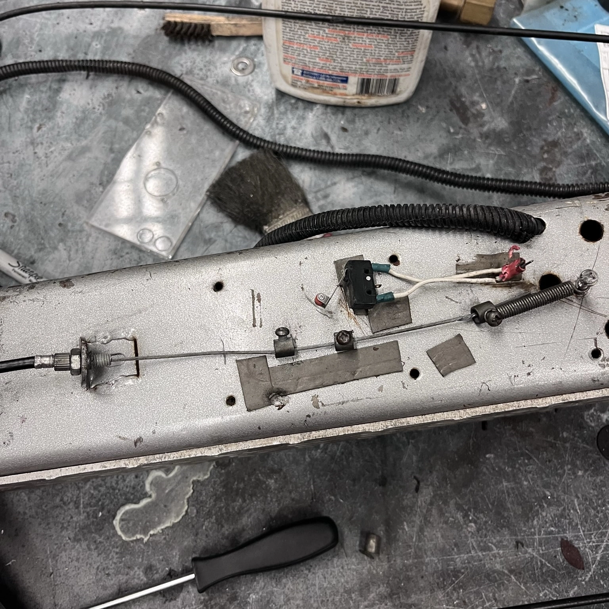
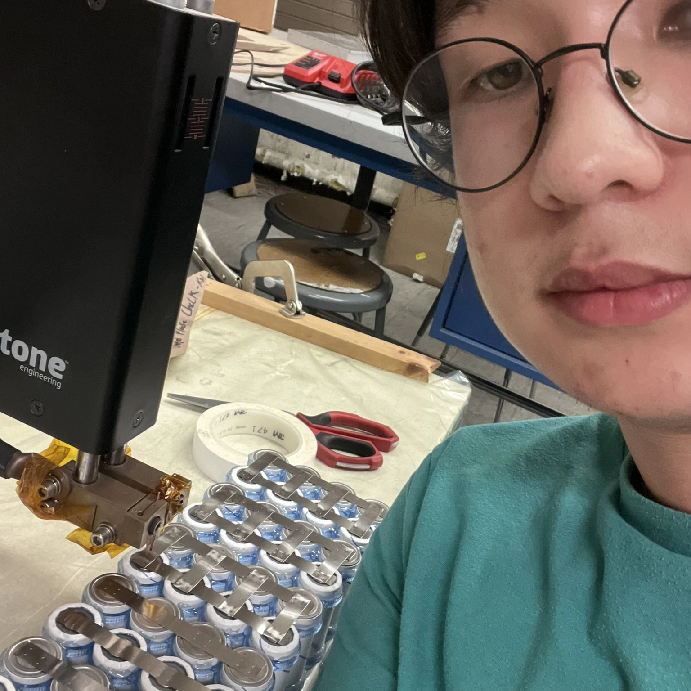
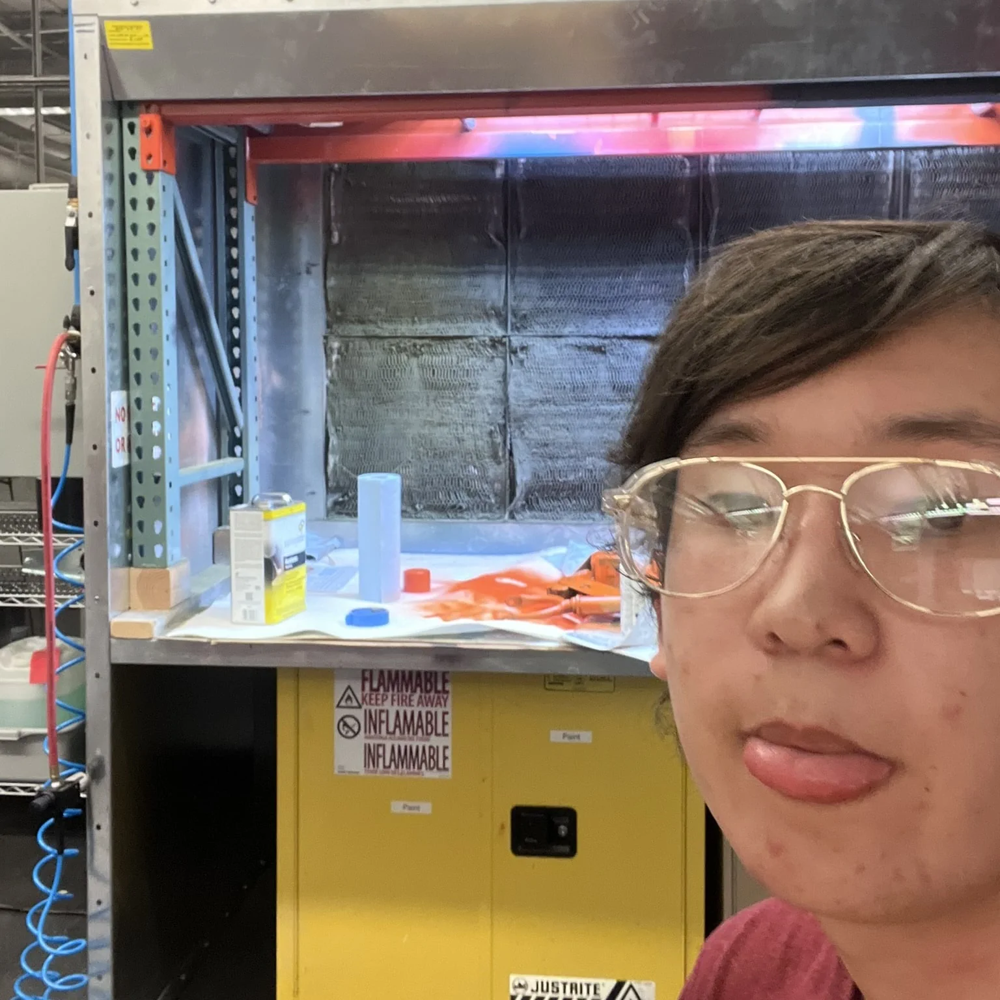
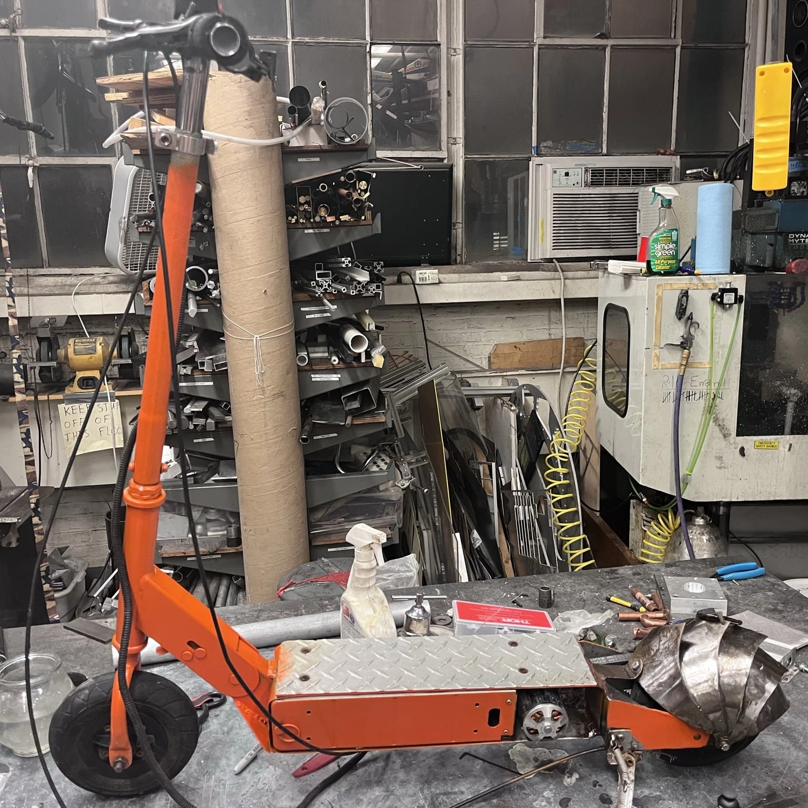
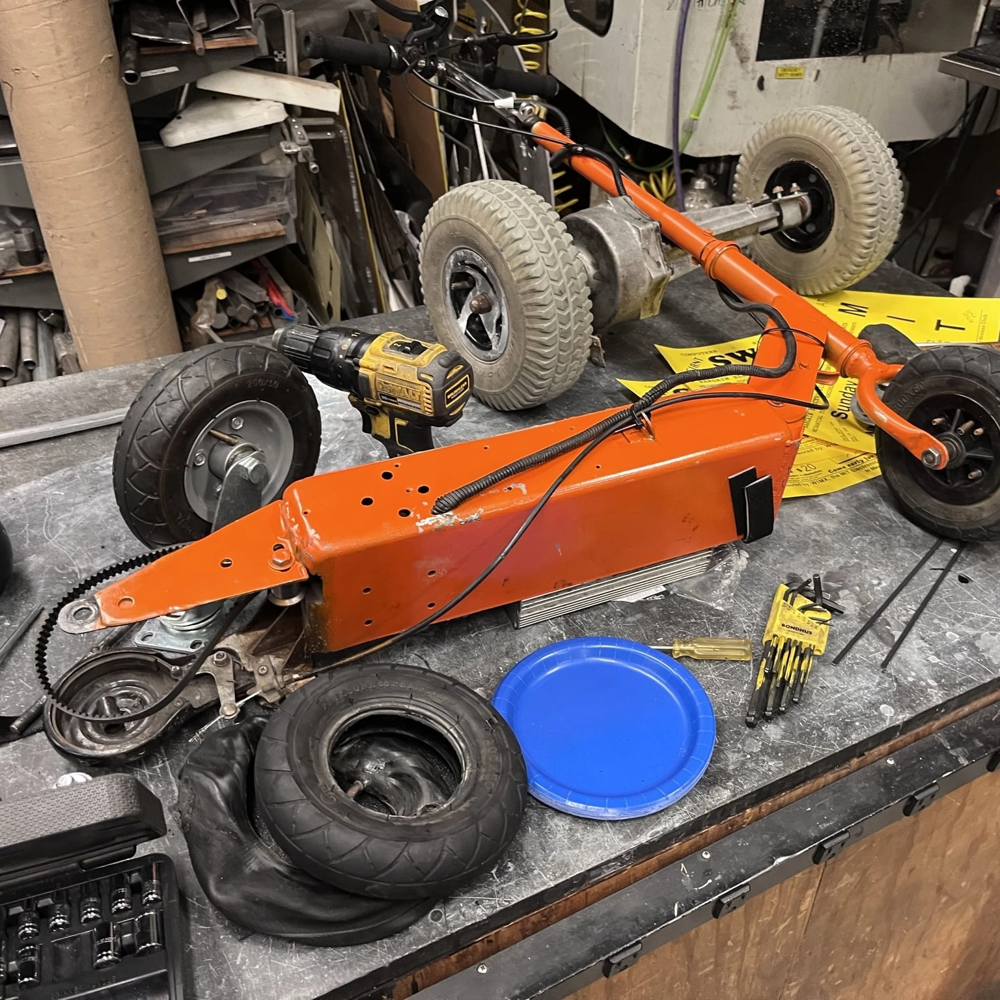
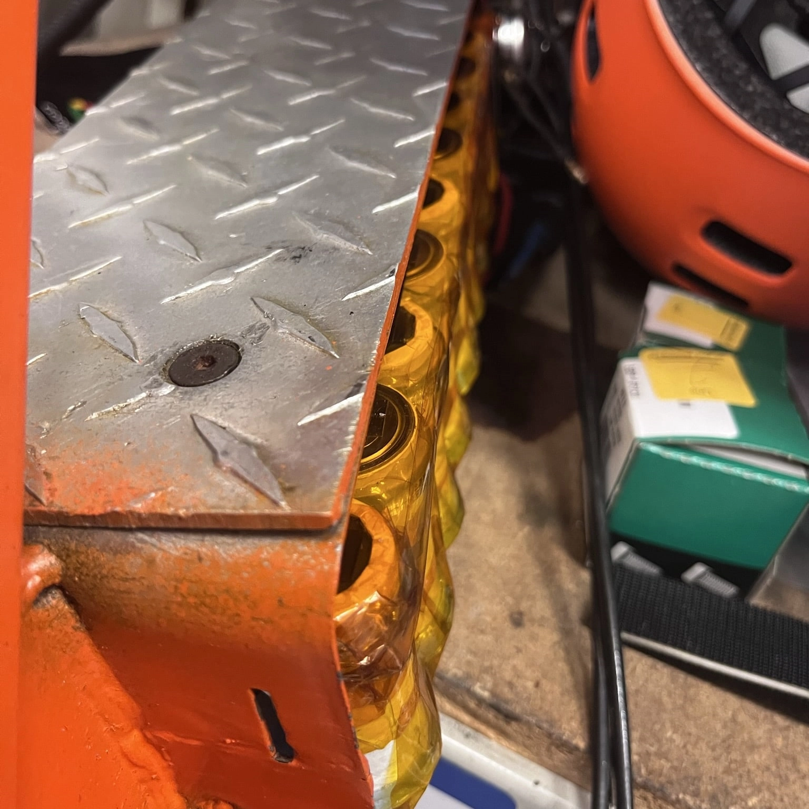
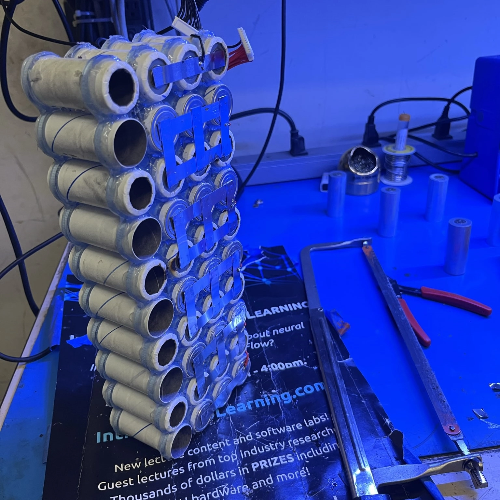
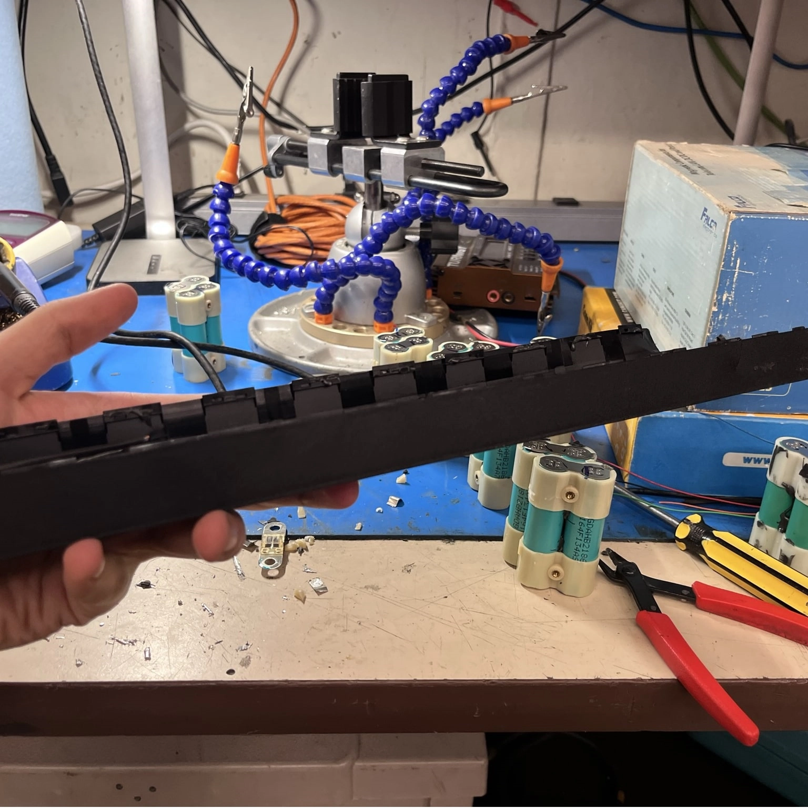
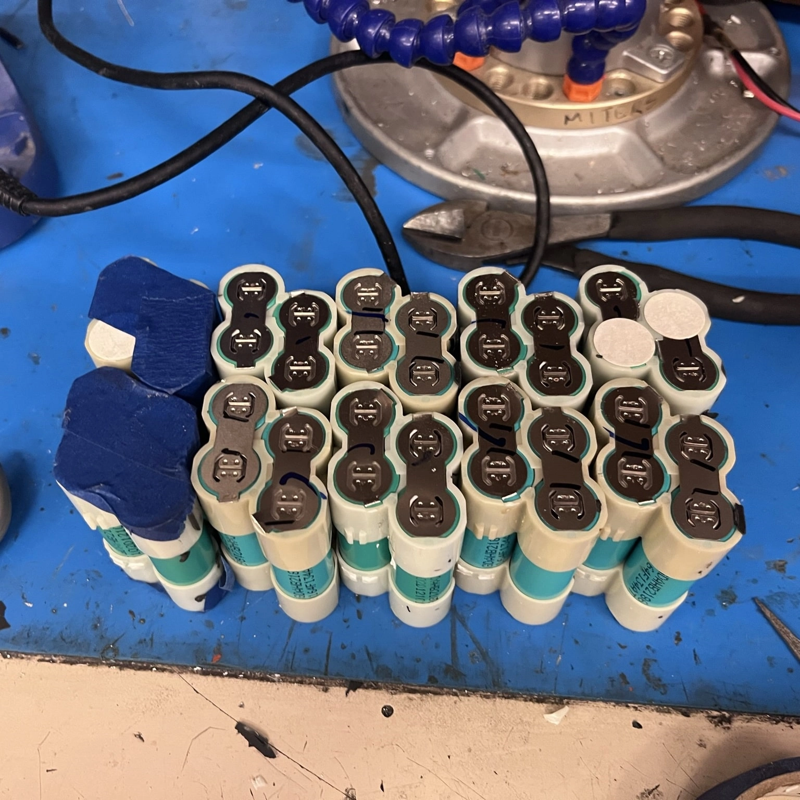
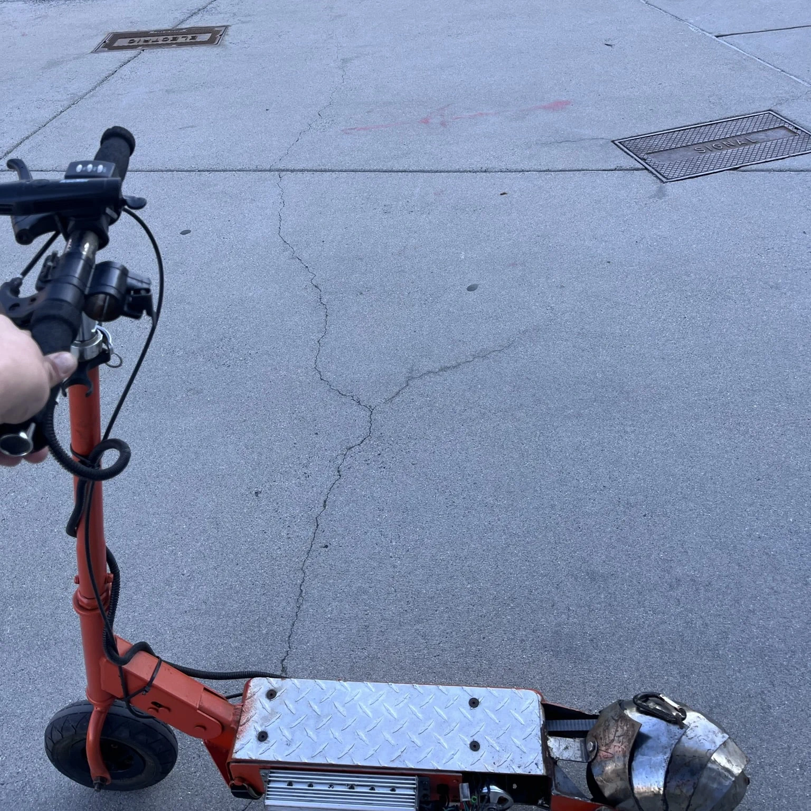

1- Original Siding with Rudimentary E-Brake Assembly

2- Spot-welding New Battery

3- New Coat of Paint

4- Fully Assembled Scooter

5- Disassembly for Flat Tire

6- Battery Size... Error

7- Cutting First Battery Frame Down to Size (Note: removed cells for safety)

8- Deconstructing Power Cell for 18650 Cells

9- New 18650 Battery Layout

10- Functioning Street Picture
Previous
Next
The scooter is my second project and a vehicle I built at MIT.
I had a better start compared to the tricycle. Based on how difficult it was to make the tricycle work,
I started by refurbishing and revitalizing an older vehicle of MITERS instead of designing one from scratch.
The scooter was owned by previous MITERS member and president Mason Massie. By some means,
the old battery combusted while inside the scooter body. Thankfully, the battery compartment of the scooter's steel
frame was the only part horrifically charred and gross. So after cleaning out the internals and removing some external rust with
a wire brush and flap sander, I had a scooter frame with handlebars, wheels, and motor already mounted.
Thus the first thing to do
to make the scooter run again was to build a new battery. Taking what I learned from the first pack I made for the tricycle,
I made a frame out of a laser-cut acrylic sheet to support the battery cells better. While this wasn't as good as an off-the-shelf
solution and still required some structural hot glue for rigidity, this pack felt more solid than the first. I used the N51 spot welder
instead of a handheld unit to attach the same lithium-iron phosphate batteries in a ten series and four parallel (12S4P) configuration.
After I attached the battery management system (BMS) to the pack, I was done (or so I thought). After finishing the battery pack,
I painted the frame for rust protection and, most importantly, aesthetics in my favorite color: orange.
Following the precedence
set by my tricycle project, problems started at the halfway-ish point of my scooter refurbishment.
It turned out that sitting on a rack for the entirety of quarantine (and probably longer) wasn't great for the
cheap scooter tires on the frame, so I had to replace the rear tire. After that, which you can see in photo six,
the battery was somehow TOO BIG. I figured out that the added spacing from the battery frame and wiring made the
pack too large. For the record, I had fit-checked the four cells beforehand. I was somewhat at my wit's end between
the difficulties I had making the battery pack and all the other school things going on, so I took a hiatus from the project.
My hack job
(or hacksaw job, haha) solution to the problem was to cut off a row of series cells, making the pack 10S and 3P.
While lopping off ten cells reduced the capacity, the pack now fit into the battery compartment, and I could ride
the scooter for the first time. While I could travel to the edges of campus comfortably, I constantly had to charge
the battery with a modified off-the-shelf wall charger to ensure I wouldn't have to walk back. Because of this, I decided
to make a new battery pack.
For the second battery,
Joseph, another MITERS member, generously gifted me three
UPS
battery modules he had crufted.
These modules contained four bundles of four 18650 battery cells, meaning I had 48 18650 batteries to work with.
Well, it was actually only 40 because I screwed up two cell packs when I salvaged the batteries. So I now had a 40-cell,
10S 4P battery pack which was smaller and theoretically higher capacity than my previous battery pack. I spot-welded the battery
before leaving for summer 2022 but did not attach a BMS.
Fast forward;
I came back in the fall of 2022 to complete the battery pack and make the scooter functional again.
I tested the battery to make sure it was okay after sitting around all summer, and to my dismay,
one of the rows of cells was almost 2 volts lower than the rest. This meant that there was some problem with the battery pack.
After slowly charging the row to balance the battery pack manually, I tried charging the battery from a bench power supply.
Immediately after I turned on the power supply, the nickel strips connecting the cells turned red hot, meaning something was seriously
wrong with my pack.
So I'm also stuck on this project
pending the disassembly of the battery, which would be difficult to do without damaging the battery or buying new cells.